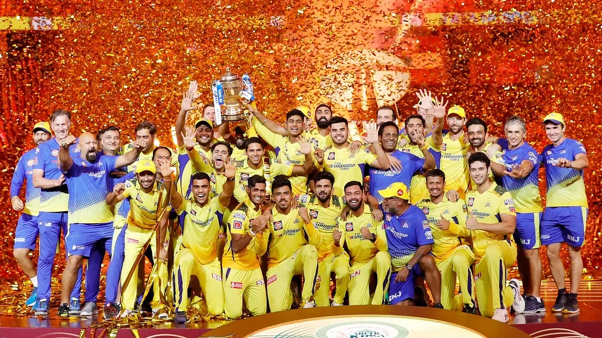

করোনার ধাক্কা সামলে ৪ বছর পর হোম-অ্যাওয়ে পদ্ধতিতে ফেরা, রিংকু সিংয়ের শেষ পাঁচ বলে পাঁচ ছক্কা মেরে দলকে জেতানো, বিরাট কোহলির নিজেকে ফিরে পাওয়া, ফাফ ডু প্লেসির বুড়ো হাড়ের ভেলকি, যশস্বী জয়সোয়াল-আকাশ মাধওয়ালদের উত্থান, শুবমান গিলের অবিশ্বাস্য ফর্ম, তৃতীয় দিনে গড়ানো ফাইনালের শেষ ২ বলে ১০ রান নিয়ে রবীন্দ্র জাদেজার ইস্পাতদৃঢ় স্নায়ুর আরেক দফা জানান দেওয়া আর শিরোপা জিতে মহেন্দ্র সিং ধোনির চমক—কী ছিল না এবারের আইপিএলে?
চমক ছিল টুর্নামেন্টের প্রাইজমানি বা আর্থিক পুরস্কারেও। এ মৌসুমে রেকর্ড ৬০ কোটি ৩১ লাখ টাকারও বেশি আর্থিক পুরস্কার দিয়েছে ভারতীয় ক্রিকেট বোর্ড (বিসিসিআই), যা গত বছরের অক্টোবর-নভেম্বরে অস্ট্রেলিয়ায় অনুষ্ঠিত সর্বশেষ টি-টোয়েন্টি বিশ্বকাপের চেয়েও বেশি! বিশ্বকাপে মোট ৬০ কোটি সাড়ে ৩ লাখ টাকা আর্থিক পুরস্কার দিয়েছিল আইসিসি

এবারের চ্যাম্পিয়ন ধোনির চেন্নাই সুপার কিংস পেয়েছে ২৫ কোটি ৯৪ লাখ টাকা, রানার্সআপ গুজরাট টাইটানস পেয়েছে ১৬ কোটি ৮৬ লাখ টাকা। এ ছাড়া সর্বোচ্চ রানসংগ্রাহক, সর্বোচ্চ উইকেটশিকারি, টুর্নামেন্টসেরা খেলোয়াড়সহ আরও অনেক ক্যাটাগরিতে পুরস্কার দেওয়া হয়েছে।